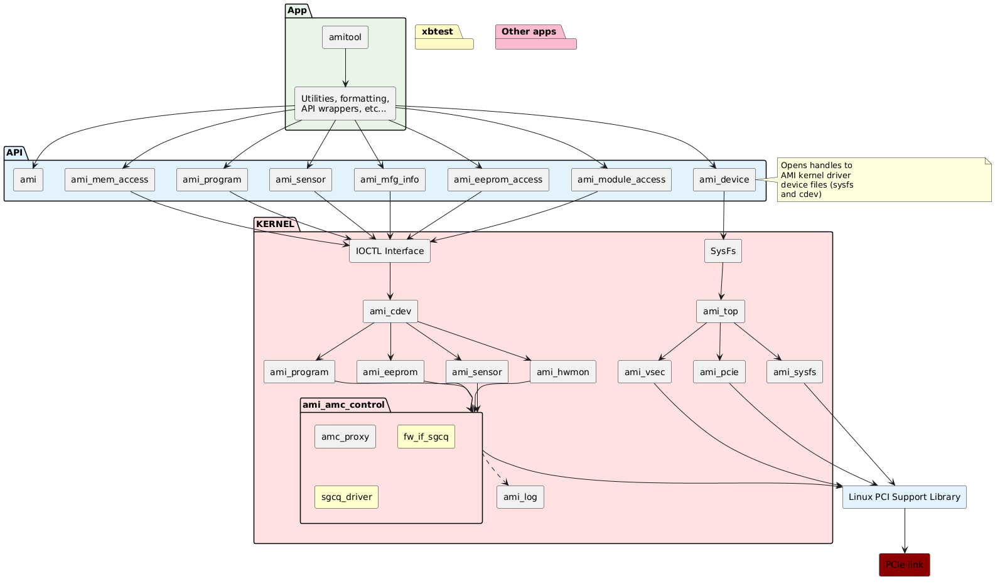

AMI Architecture¶
Overview¶
The AMR Management Interface (AMI) provides host-access to control
and manage the Advanced Management Controller (AMC).
It consists of:
A kernel driver, providing access to the AMR platform via the sGCQ (Simplified Generic Command Queue) interface.
An API (libami), providing a user-space abstraction to the kernel driver.
A command line tool (amitool), providing a human-readable interface to the API.
Note: The AMI is an example design demonstrating how an AMR host interface might be developed. It is not intended to be the final implementation for AMR runtime management and control.
Key Components¶
Kernel Driver¶
Communicates with AMC firmware via sGCQ
Manages PCIe configuration space and VSEC capabilities
Provides character device interface for user-space access
Implements sensor monitoring via Linux hwmon framework
Handles AMC heartbeat monitoring and logging
API Library (libami)¶
C library providing programmatic access to AMC functionality
Abstracts kernel driver interactions
Supports:
Device discovery and management
Sensor data collection
Manufacturing information access
Memory-mapped I/O operations
EEPROM and QSFP module access
PDI download and partition management
Command Line Tool (amitool)¶
User-friendly interface to libami API
Supports interactive and scripted operations
Provides commands for diagnostics, monitoring, and management
Communication Architecture¶
Request/Response Flow¶
The AMI uses a synchronous request/response model:
User Space → API calls libami functions
libami → Issues ioctl() to kernel driver
Kernel Driver → Submits request via AMC Proxy
AMC Proxy → Sends request through sGCQ to AMC firmware
Kernel Driver → Blocks on completion variable
AMC Firmware → Processes request and sends response via sGCQ
AMC Proxy → Invokes callback (amc_proxy_callback)
Kernel Driver → Signals completion variable and unblocks
libami → Returns data to user application
Timeouts¶
Most commands: 150 seconds
Partition copy: 60 minutes
Heartbeat: 0.5 seconds
Top Level Block Diagram¶

Behavior¶
Initialisation¶
Command Line Tool¶
API Abstraction¶
Driver Interaction¶
Sensor Control¶
Device Reboot¶
Version Compatibility¶
The AMI driver checks for compatible AMC firmware versions during
initialization. When version mismatch is detected, the driver
operates in compatibility mode with reduced functionality. For full
feature support, ensure AMC firmware version matches the AMI driver
version.